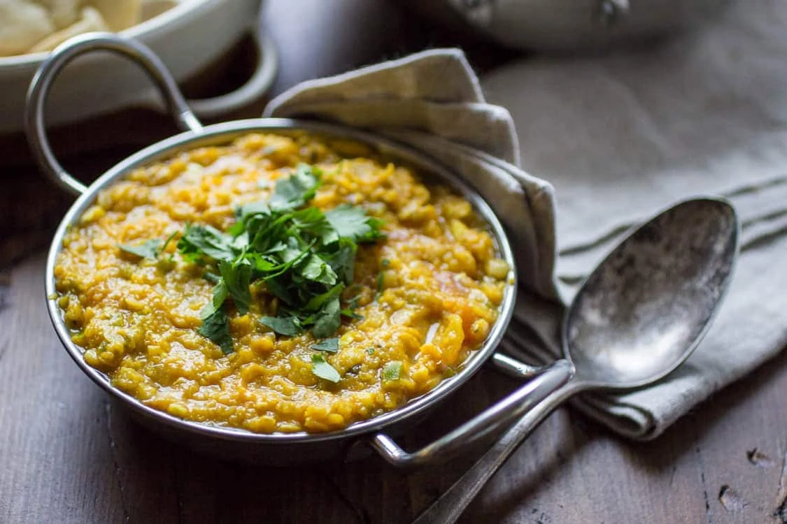

Red Lentil Dal

Description
This Red Lentil Dal recipe makes the perfect plant-based Indian meal! Rich, fragrant, and packed with protein for a meal you can feel good about. Dal is one of my very favorite Indian dishes because of how quickly it is made.
A red lentil dal cooks really fast, so this whole red lentil recipe is done in 30 minutes start-to-finish.
Ingredients
- 1 cup red lentils rinsed
- 3 cups room temperature water
- 1 tbsp cumin seeds
- 1/2 tsp cumin seeds
- 1 2" cinnamon stick
- 1 cup diced yellow onion
- 1 green chili pepper stemmed, seeded, and minced
- 4 garlic cloves minced
- 1 tbsp ginger root finely minced
- 1/2 tsp ground turmeric
- 1/2 tsp ground cardamom
- 1/2 tsp paprika
- 3/4 tsp kosher salt
- 1 medium tomato
- Juice of one half a lemon
- Chopped coriander leaves for garnish
Steps